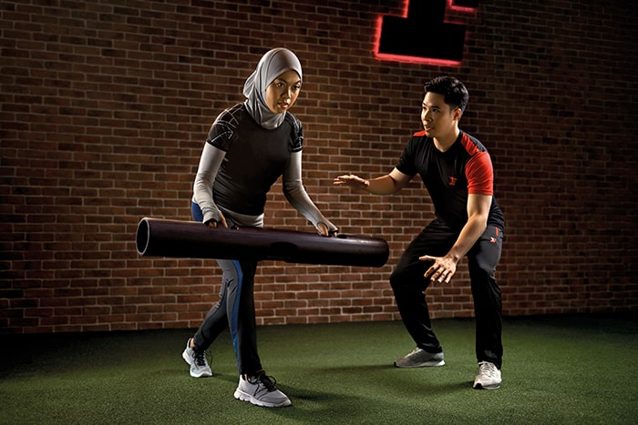

Rebuild Healthy Habits
Your physical health and fitness performance are reliant on many factors, including things that happen outside of the gym. Sleep (quality and quantity), stress levels, nutrition, alcohol intake, and water consumption are among the variables that play their part in determining your overall health and body response.
What’s more, many of these factors are linked; high alcohol intake, for example, can affect hydration levels and sleep quality, which pushes your stress levels up and trigger more cravings, causing you to make poor food choices. How do you think you’ll perform at the gym after a night of drinking and sleeping poorly? Get your healthy habits and routines in order and you’ll find that it’s easier to get back on the fitness track.
Warm Up, Cool Down
You’ll need to recondition your muscles and prime them for working out. Before each exercise, activate your muscles by stretching or doing the same movements, but without weights. You can also use a foam roller to warm up the muscles. Do the same after you’ve completed your workout.
Reduce The Weights
Start lighter to go easy on your muscles and joints. A good tip is to pick up no more than 70-80% of the weights you used to lift. If you used to do 40kg bench press, for example, start with 30kg. Work your way up by increasing about 10% of the weight each week.
Reduce The Reps
Take a similar approach with the repetitions per set. Gradual loading is key. If you used to do 12 reps per set, now aim to do just 6. Let your body get used to each exercise again and gradually increase to your previous 12 reps per set
Check In With Yourself
Are you pushing yourself too far, too fast or too hard? Only you can answer that. Be mindful of every move you make, constantly check in with yourself, and listen to your body. A simple general rule to follow is: When in doubt, don’t. It’s better for you to “underwork”, so to speak, than overdo it and end up harming yourself.

Get Professional Help
You know the importance of getting the form right, especially when you’re working out at reduced capacity. You may be an experience gym-goer and know your way around the machines and equipment, but you also know that you can go further if you have a personal trainer guiding you. You can also consider visiting a physiotherapist, who can suggest modifications to your exercise regime, if necessary, to ensure you’ll be working out safely and effectively.
Ready to jump back into things at the gym? Keep these 6 pointers in mind, and go for it. Just remember that safety always comes first.